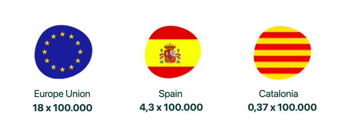

Date: February 2021
Untangled | UX Design of a Wellness App
Team: Individual Project
Role: Researcher, UX Designer, UI Designer
For the sixth project of IronHack‚Äôs course I had the challenge of creating a wellness app. I decided to work with mental wellness, as its relevance in human health is being understood these days, plus I have many psychologist friends who could help me out üòâ. The project brief: The National Wellness Institute wants designers to conduct user research to understand people‚Äôs relationship with mental, and emotional well-being in order to develop a tool that will drive them to action. The only requirement is that it tracks the user‚Äôs progress and pushes them to commit to a healthier lifestyle. The UI should reflect a fresh, updated image.
1. Research
The first step was to find information, so I started an investigation with the goal of knowing which user profile is more likely to go to the psychologist (ask for help), what are their main reasons for attending and why some people want to go but don’t. We discovered that: Millennial women (45%) are the most common user profile to ask for help and attend the psychologist. The main reasons why people see the psychologist are: 1. sleeping problems, 2. nutrition problems, 3. dissatisfaction or malfunction in life, 4. feeling empty or constant boredom and lack of motivation, 5. low mood most of the time, 6. recurring negative thoughts or fears, 7. lack of control over your emotions, 8. excessive worry. The main reasons why this user profile does not refer to the psychologist are: the price of consultations and the fear of not connecting with their psychologist or not being able to find them. Along the way we realize alarming figures of the ratio of psychologists per inhabitants according to the INE (National Institute of Statistics, Spain) 2019. They were the following:
But if we add these alarming figures to the fact that recent graduates of psychology cannot work in clinics and hospitals (in Spain) if they do not have the Clinical Health Master’s degree, which makes clear the need for help in this sector.
2. Competitive Analysis
In order to identify the best spot for our app in the market, we carry out a competitive analysis. We found that there are 282 apps in the market focused on Mental Health, of these we focus on: Shine, iFeel and Bloom. We discovered that they had their strengths and their weaknesses; but none of them offered personalised and free help, this is where we want to position our app.
3. User Personas
With the previous information as a starting point, 7 interviews were conducted with psychologists and patients attending to therapeutic consultation. Thanks to the insights found, two user profiles could be defined: Silvia, a girl who would like to attend the psychologist but finds it a bit expensive, and Luis Alberto, a young graduate psychologist who is looking for patients to get an income. These are their needs.
Having clear the user personas we were able to define a problem to solve. Our app needed to be: A platform that brings together psychologists and young people interested in their service, Tailored for patients, they needed to feel that the app was addressing them and not a prototype of a person. Problem fixer, users needed to feel that they were taking a step towards a solution after using it. As humanised as possible in order to create the important link between therapist and patient.
4. Ideation
I started the ideation stage with the brainstorming tool. At first it was very difficult, no idea seemed good, novel, or left some point of the problem in the air. It was a bit frustrating, but the important thing is not to give up, and with a lot of work I managed to come up with an idea that I really liked!!! What a relief üòÖ. This idea was to create a kind of alcoholics anonymous. Psychologists would conduct weekly online workshops with patients. The patients, anonymously, could write a message to the therapist for a response during the workshop. Before starting to draw the prototype in low fidelity I made a flow to better understand what was going to happen in the app.
5. Low-Fidelity
Taking into account the needs of the user and the user stories, the product began to be defined. First I made a flow map and then the low-fi prototype.

6. High-Fidelity & Prototype
The process to achieve the final result was arduous, together with the collaboration of 7 users, 3 tests were carried out that were improving the product each time 1.One of the most complicated and tested elements within the app was the following card:

I tried again and again, keeping in mind that the most important thing is not to give up. This card should have the possibility of accessing the main information of the workshop at a glance, it should offer the possibility of obtaining more information and it should also offer the possibility of joining the workshop or canceling it. Some of the options did not seem native, some users were confused with the three-point menu, they also considered that the “X” icon was not the most appropriate to cancel the meeting and the toggle to schedule the weekly workshop was confusing. It was determined that the toggle would be within the more information screen. The final card was:
2. Users said that the difference between “group workshops” and “individual therapies” was not very obvious, so the design was changed to look like more buttons.
3. Users also needed a summary of the workshop details before confirming their attendance.
4. Another problem that users encountered was how to write the message for the new meeting if the toggle to participate every week was activated? The solution was that the user could edit it within the “more information” screen and would have 5 days to do it before the next workshop.
5. According to the users, a graph system that shows the feelings after each session could sometimes seem daunting, so it was decided to change for a knot that represents the mind and it is unraveled with each workshop, therapy or objective that the user fulfils, thus representing a goal to achieve and not just moods.
You can see the full prototype in the vídeo below, it will be cool if you check it out and let me know your thoughts.
7. Next Steps
Taking into account that for this work the objective was to create an MVP, there were many things to do in the next iterations such as: Creating the platform from the point of view of the therapist. Add community feature for users to support each other. Give to the user the opportunity to be public and participate in the live workshops.
8. Learnings
This project allowed me to grow within my learning and gain confidence in my weak points. I ratified the importance of methodological steps to move forward when you are stuck. Every idea has to be backed by a business point of view. Combining disciplines can be difficult but it has very positive results. Never give up, never surrender! Thanks for reading! üòÅ
Ready to start a project?
Reach out and let's make it happen.